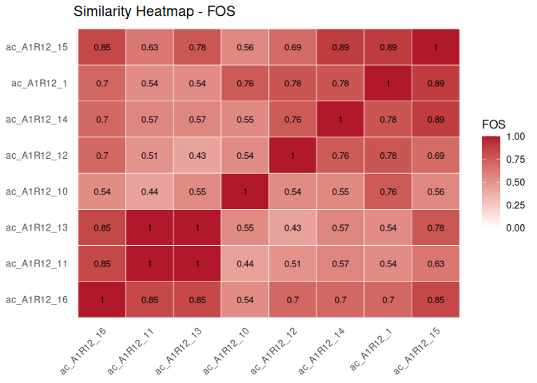

ramen (Reconstruction and Alignment of Microbial Exchange Networks) compares microbial communities by their metabolic exchange networks rather than by species composition. Given species-metabolite-flux data (e.g. from community flux balance analysis), ramen reconstructs directed metabolite-to-metabolite networks and quantifies how functionally similar different communities are – even when they share no species at all.
Quick start
library(ramen)
data("misosoup24")
## Build two consortium objects
cm1 <- ConsortiumMetabolism(
misosoup24[[1]], name = names(misosoup24)[1]
)
cm2 <- ConsortiumMetabolism(
misosoup24[[2]], name = names(misosoup24)[2]
)
## Align them
cma <- align(cm1, cm2)
scores(cma)
#> $FOS
#> [1] 0.7634409
#>
#> $jaccard
#> [1] 0.3397129
#>
#> $brayCurtis
#> [1] 0.3115158
#>
#> $redundancyOverlap
#> [1] 0.3397129
#>
#> $coverageQuery
#> [1] 0.7634409
#>
#> $coverageReference
#> [1] 0.3796791For the full workflow – from data import through alignment, functional groups, and visualization – see vignette("ramen", package = "ramen").
Compare many communities at once
Bundle a handful of consortia into a ConsortiumMetabolismSet, align them all-against-all, and plot the resulting similarity matrix:
sel <- names(misosoup24)[seq_len(8)]
cms <- do.call(
ConsortiumMetabolismSet,
c(
lapply(sel, function(n) {
ConsortiumMetabolism(misosoup24[[n]], name = n)
}),
list(name = "misosoup24[1:8]", verbose = FALSE)
)
)
plot(align(cms))
Installation
Install the development version from GitHub:
pak::pkg_install("admarhi/ramen")
# or
devtools::install_github("admarhi/ramen")Core workflow
- Import species-metabolite-flux data (from MiSoSoup YAML, CSV, or any data.frame)
-
Build
ConsortiumMetabolismobjects (one per community) -
Group them into a
ConsortiumMetabolismSet(computes pairwise overlap and clustering) - Align communities pairwise or across the full set using five complementary metrics (FOS, Jaccard, Bray-Curtis, Redundancy Overlap, MAAS)
- Visualise with heatmaps, network plots, dendrograms, and functional group analyses
All three classes inherit from Bioconductor’s TreeSummarizedExperiment, so standard accessor functions (assay(), colData(), dim(), etc.) work out of the box.
Vignettes
-
vignette("ramen")– full introduction and analysis pipeline -
vignette("alignment")– alignment metrics, coverage ratios, and permutation p-values -
vignette("visualisation")– gallery of all plot types